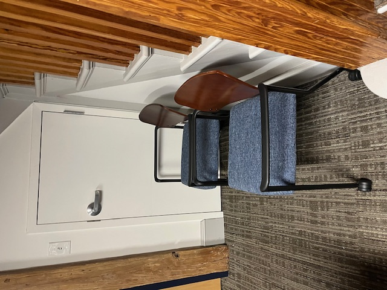
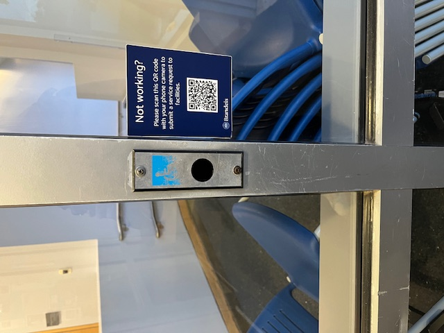
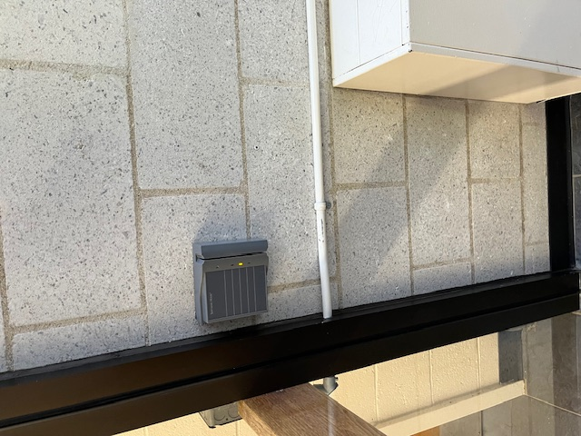
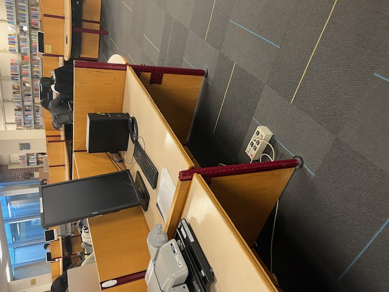

Scavenger Hunt
Project 4.5
Project 4.5
Designs For Access

Design for navigation without one or more of the 5 senses
Braile for those who can't read the signs

Design for forms of assistance, broadly defined
A ramp for those who can't use the steps

Design for aging, broadly defined
Chairs in my office in case someone older can't stand while their card is being printed

Design for young children
A child-sized urinal

Design for wheeled mobile gear
A button allows for wheelchairs to pass through doors more easily
Designs Against Access
Design with physical barriers
By requiring swipe access to get into the hall, it has a physical barrier.

Design with a lack of information
How do we know when the buses are coming?

Design with an absence of help
This desk was built for students to work at, but it has no chairs, and no instructions on where to find them.
Designs Priorities In The Built Environment

Design for historical specificity
A no longer used building, but it's pretty and was important in the past

Design for environmental sustainability
Re-usable boxes! Don't throw them out!

Design for health and well-being
Sanitize, don't be sick :)

Design for....recreation
To relax and have fun playing basketball